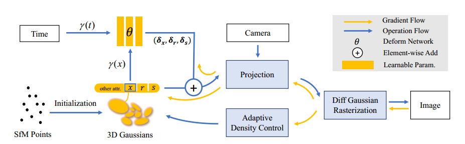
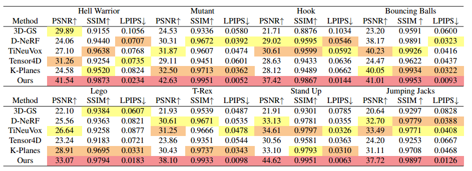

论文泛读之Deformable 3DGS
本文最后更新于 2025年11月11日 晚上
单目动态：Deformable 3D Gaussians for High-Fidelity Monocular Dynamic Scene Reconstruction [CVPR2024] paper
😄contribution:
- 提出了一种基于可变形3D高斯模型的单目动态场景重建方法，能够高效地捕捉和表示动态场景中的细节变化。
- 一种新颖的退火平滑训练机制，确保时间平滑性。

⛺method:
- Deformable 3DGS: 仅仅使用一个形变网络来预测基元的属性增量 (位置x、四元数r、缩放s)，网络由MLP实现。输入的是经过位置编码后的向量。
作者未使用NeRF中常用的参数编码 (网格、平面结构) 来编码场景加速收敛，原因是因为这些编码方式是低秩的，而动态场景是高秩的。
- 退火平滑训练机制 (AST): 提出原因是colmap提供的位姿估计不准确，会降低渲染效果。在训练时间的NVS效果挺好但是在新插值时间下的渲染效果不行。在编码时间上加一个经迭代次数衰减的噪声项：
- 初始化是由sfm得到的3D点初始化----作为规范场。训练过程中40k次迭代，前3k只优化GS，后面联合优化GS和MLP。
- 从overview来看只用了render损失，文中也没细说。
⭐experiment:

点刷的非常高啊😂
论文泛读之Deformable 3DGS
https://atat1010.github.io/2025/11/10/papers_note/Deformable_3DGS/